Clearox® peut être utilisé comme activateur de peroxyde d’hydrogène à diverses fins générales. Par exemple, la désinfection des surfaces de travail ainsi que pour la désinfection des animaux (par exemple déschlammage des poissons, sanatation dans l’industrie de transformation de la viande) peuvent être accomplies par ajoutant Clearox® au peroxyde d’hydrogène. Il peut également être utilisé pour la purification de l’eau en raison de l’élimination et la prévention du biofilm.
Qu'est-ce que notre produit fait-il?
Clearox® est basée sur l’idée d’ajouter un gel de stabilisation et d’activation de l’eau oxygénée pour assurer une réaction contrôlée du peroxyde d’hydrogène. De cette façon, très peu de produits chimiques est gaspillé et beaucoup mieux la désinfection est réalisée. C’est pourquoi Clearox® est unique et ne sont pas comparables au peroxyde d’hydrogène plus.
Les industries reconnaissent généralement le peroxyde d’hydrogène en tant que produit agissant contre un vaste éventail de micro-organismes, à excellentes propriétés virucides, qui se décompose en eau et oxygène. Toutefois, il présente un grand inconvénient: sa réaction incontrôlée quand il entre en contact avec les micro-organismes et les matières organiques- cela signifie qu’il n’est pas efficace et cause beaucoup de déchets. Clearox® résout ce problème.
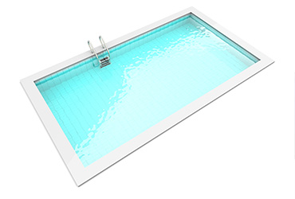
Où peut-on utiliser nos produits?
Les résultats suscitent une nouvelle étape dans la désinfection: avec la dose la plus faible possible de l’efficacité la plus élevée possible.
- La norme Clearox ® est basée sur 35% de peroxyde d’hydrogène – nous pouvons produire une dilution comprise entre 0,5 et 35% à la demande.
- Est entièrement composé d’ingrédients alimentaires sûrs.
- Formé d’un large spectre d’activité anti-microbienne, très efficace contre les bactéries, (gram positif et à gram négatif).
- Il est également un virucide, efficace contre les moisissures, les levures et moisissures et même tue les spores bactériennes.
- À dosage recommandé, il est non mutagène, non carcinogène, non toxique, non corrosif, non-altérant, non volatile.
- Il n’a pas d’odeur, de goût ou de couleur. A une action prolongée (effet résiduel).
- Très efficace contre les biofilms.
- Est efficace même en présence de la matière organique.
- Les micro-organismes ne peuvent pas développer une résistance contre Clearox®.
- Pas affecté par les niveaux de pH et des températures allant jusqu’à 90°C.
- Conserve sa stabilité lorsqu’il est exposé à la lumière.
- N’altére les aliments lorsqu’il est utilisé aux concentrations recommandées des fabricants.
Agriculture et d'Horticulture
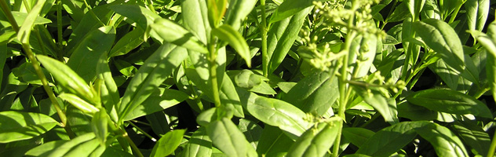
La production hydroponique, les plantations, la préservation, la désinfection, pré-et post-récolte, etc.
Utilisant Clearox®, l’hygiène sera améliorée. Le biofilm qui est utilisé par les bactéries comme la nourriture sera supprimé efficacement. Pour cette raison le processus de production devient plus hygiénique. Le processus plus hygiénique conduira à des cultures de haute qualité.
Domaines d'application:
- Irrigation
- Lavage
- L’eau de refroidissement
- Solutions nutritives hydroponiques
- La pulvérisation de l’eau / de refroidissement
- Désinfection de l’air ambiant / humidificateurs
- Équipements, machines, outils
- Courroies transporteuses, dispositifs de transport
- Lutte contre les maladies post-récolte
- Fleurs, fruits, légumes, etc.
- La désinfection des semences
- Surfaces (sols, murs, plafonds)
- Les véhicules de transport, des camions, des conteneurs
- Matériel de transport, équipement de tri
- Installations de nettoyage
- Machines de traitement
- Conditionnement
- Pots
- Les installations de stockage
- Équipements, machines, outils
- Vêtements de travail
- Surfaces, étagères, équipements
- Désinfection du sol
- Arbres de ventilation
- Dispositifs de lavage de l’air
- Les systèmes de climatisation
Remarque: Une diminution significative de la maladie de la plante après l’utilisation de Clearox en irrigation / l’eau de pulvérisation a été remarquée. En outre, un développement des racines, une croissance significative de l’augmentation de la plante ainsi que la santé générale de la plante ont aussi été remarqués.
Aquaculture
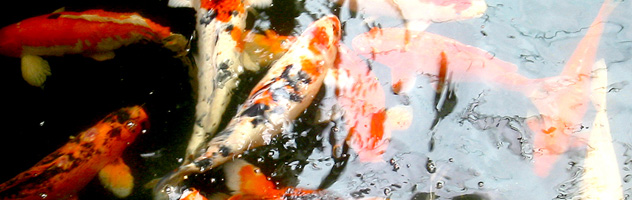
Désinfection dans les élevages de poissons, des fermes de crevettes, moules et les fermes d’huîtres, poissons et crustacés, etc.
Domaines d'application:
- Traitement de l’eau
- Les étangs, les piscines, les canaux
- Conteneurs
- Surfaces (sols, murs, plafonds)
- Équipements, machines, outils
- Les systèmes de manutention (alimentation)
- Dispositifs de capture
- Surfaces (sols, murs, plafonds)
- Matériel de transport, le tri des plantes
- Équipements, machines, outils, couteaux
- Conteneurs de transport, camions, rampes
- Surfaces (sols, murs, plafonds)
- Les périphériques de stockage
- Équipements, machines, outils
- Conteneurs de transport, camions, rampes
- Glace
- Arbres de ventilation
- Dispositifs de lavage de l’air
- Les systèmes de climatisation
L'industrie de transformation du poisson
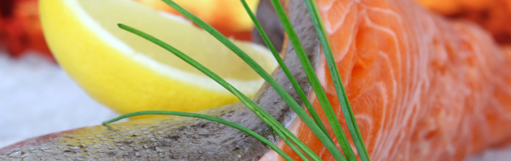
Traitement des poissons, crevettes, moules, huîtres, etc.
Domaines d'application:
- Traitement de l’eau
- Eau de process
- l’Eau potable
- Glace
- Surfaces (sols, murs, plafonds)
- Rampes, zone de livraison
- Les conteneurs de transport
- Les boîtes de transport, les véhicules
- Matériel de transport
- Surfaces (sols, murs, plafonds)
- Éviscération et dépouillement des installations
- Machines de traitement
- Matériel de transport, le tri des plantes
- Équipements, machines, outils
- Conditionnement
- Vêtements de travail
- Surfaces (sols, murs, plafonds)
- Les conteneurs de transport
- Camions
- Surfaces, des étagères, des équipements
- Arbres de ventilation
- Dispositifs de lavage de l’air
- Les systèmes de climatisation
l'Eau potable
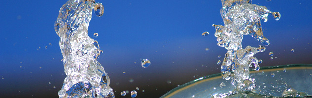
Domaines d'application:
- La désinfection de l’eau brute
- Réseau de pipeline (nouveaux et existants)
- Désinfection à long terme
- Désinfection de l’eau en cas d’urgence
- Eau domestique (intérieur des bâtiments)
- Prévention et le contrôle de Legionella
- L’enlèvement et le contrôle biofilm
- Conduites d’eau potable (debout et méthode des flux)
- Les citernes, les réservoirs
- Puits
- Équipements, machines, outils
- Réservoirs
Piscine et bains tourbillons
Les piscines privées et publiques natation, piscines de l’hôtel, des piscines thermales, bains à remous, bains à remous, jacuzzi, saunas, centres de remise en forme, solarium, etc.
Domaines d'application:
- Désinfection de l’eau
- Désinfection de l’eau
- Suppression et contrôle biofilm
- Désinfection de l’eau
- Désinfection de l’eau
- Suppression et contrôle biofilm
- Désinfection générale
- Dispositifs de lavage de l’air
- Humidificateurs (Tous les humidificateurs exigent un nettoyage régulier. Défaut de nettoyer votre humidificateur sur une base régulière conduira à l’accumulation de moisissures, champignons et bactéries)
- Arbres de ventilation
- Les systèmes de climatisation
Industrie laitière
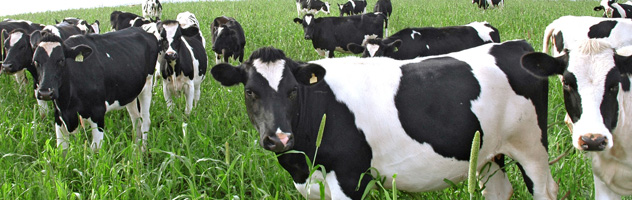
Industrie de la transformation du lait, les laiteries, la fabrication du fromage, les producteurs de yaourts, glaces, etc.
Domaines d'application:
- Traitement de l’eau de service
- Traitement de l’eau
- Contrôle de Legionella
- Contrôle du biofilm / enlèvement
- Surfaces
- Les conteneurs de transport, les canettes
- Bac gerbable
- Plantes de remplissage
- Surfaces
- Équipements, machines, outils
- Plantes mélange
- Matériel de transport, stations de remplissage
- Citernes, les conteneurs
- Conditionnement
- Bouteille désinfection (nouveau et réutilisation)
- Vêtements
- Surfaces
- Conteneurs, pipelines
- Les conteneurs de transport, les véhicules
- Matériel de transport, des filtres
- Surfaces
- Dispositifs de lavage de l’air
- Les systèmes de climatisation
- Arbres de ventilation
Remarque: Clearox® est un excellent désinfectant pour une utilisation dans l’industrie laitière.
Bétail
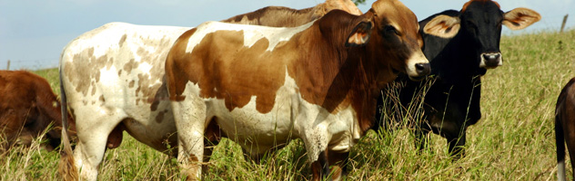
Désinfection dans des hangars d’élevage tels que la volaille, bovins, porcs, moutons, lapins, etc.
Domaines d'application:
- Traitement d’eau potable
- Traitement de l’eau de process
- Surfaces (sols, murs, plafonds)
- Aliments et boissons conteneurs
- Désinfection des œufs (de volaille), des incubateurs
- Installations de traite, pis la désinfection
- Équipements, machines, outils
- Les conteneurs de transport et de véhicules
- Traitement pour la prévention de piétin
- Bain de pieds
- Surfaces
- Les véhicules de transport, par exemple: camions / camionnettes, etc.
- Rampes
- Dispositifs de lavage de l’air
- Les systèmes de climatisation
- Arbres de ventilation
L'industrie de transformation de la viande
Abattoirs, boucheries, industrie de transformation de la viande, etc.
Domaines d'application:
- La prévention et le contrôle biofilm Legionella
- Toute l’eau
- Surfaces (sols, murs, plafonds)
- Rampes, les zones de livraison, les zones d’attente
- Les conteneurs de transport et boîtes
- Matériel de transport
- Surfaces (sols, murs, plafonds)
- Plumaison et le dépouillement des installations
- Matériel de transport, le tri des plantes
- Équipements, machines, outils
- Emballage
- Vêtements
- Surfaces (sols, murs, plafonds)
- Les conteneurs de transport
- Véhicules
- Système de réfrigération dans les véhicules
- Surfaces, des étagères, des équipements
- Dispositifs de lavage de l’air
- Les systèmes de climatisation
- Arbres de ventilation
Industrie des boissons
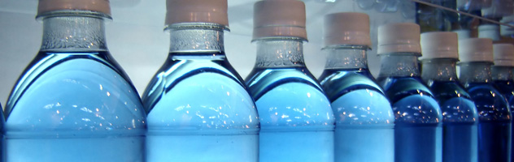
Production d’eau minérale, boissons gazeuses, jus de fruits, cidre, vin, etc.
Domaines d'application:
- Traitement de l’eau de puits
- Traitement de l’eau de service
- Douches
- Suppression et contrôle biofilm
- Les réservoirs de stockage de l’eau
- Surfaces (sols, murs, plafonds)
- Installations de tri
- Les conteneurs de transport
- Matériel de transport
- Surfaces
- Équipements, machines, outils
- Installations de tri, dispositifs de mélange
- Installation de lavage de bouteilles
- Bouteilles (nouveau et réutilisation)
- Citernes, les conteneurs
- Plantes de remplissage
- Douches
- Installations CIP
- Surfaces
- Conteneurs, pipelines
- Les conteneurs de transport et de véhicules
- Courroies transporteuses, filtres
- Surfaces (sols, murs, plafonds)
- Dispositifs de lavage de l’air
- Les systèmes de climatisation
- Arbres de ventilation
Brasseries
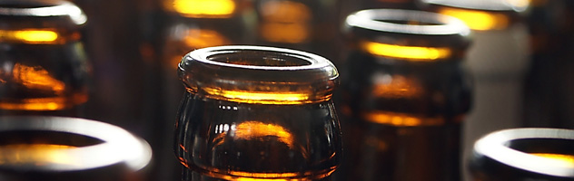
Production de bière
Domaines d'application:
- Traitement de l’eau de brassage
- Traitement de l’eau de service
- Douches
- Suppression et contrôle biofilm
- Surfaces (sols, murs, plafonds)
- Cuves de fermentation, les réservoirs de stockage, des raccords
- Les réservoirs sous pression, les pipelines, les pompes, les filtres à plaques
- Équipements, machines et outils
- Réservoirs, conteneurs, unités de dosage
- Machine de remplissage de la bouteille
- Bouteilles (nouveau et réutilisation)
- Refuser douche en verre, rinçage zones, station de remplissage
- CIP-parts
- Vêtements
- Surfaces
- Conteneurs, pipelines
- Les conteneurs de transport et les véhicules
- Courroies transporteuses, filtres
- Surfaces (sols, murs, plafonds)
- Bière ligne nettoyage et la désinfection
- Dispositifs de lavage de l’air
- Humidificateurs
- Arbres de ventilation
Industrie de la restauration
Désinfection des surfaces (cuisine, des cellules humides, salles), d’instruments, de blanchisserie, les systèmes d’eau, etc.
Domaines d'application:
- Eau chaude et froide
- Traitement de Legionella (prévention et l’élimination, le contrôle du biofilm)
- l’Eau potable
- Surfaces (sols, murs, plafonds)
- Les zones de travail
- Equipements, des étagères, des outils
- Blanchisserie
- Les surfaces en cellules humides
- Salle de bain, lavabos, toilettes
- Blanchisserie
- Surfaces (sols, murs, plafonds)
- Lits, couvertures, tapis
- Humidificateurs
- Instruments, véhicules de transport
- Blanchisserie
- Moule champignons
- Toutes les chambres et les surfaces
- Arbres de ventilation
- Dispositifs de lavage de l’air
- Les systèmes de climatisation
Climatisation
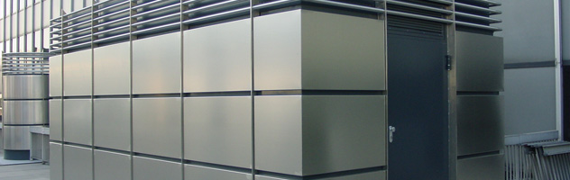
Désinfection des humidificateurs, appareils de lavage d’air, gaines de ventilation, etc.
Domaines d'application:
- Humidificateurs
- Dispositifs de lavage de l’air
- Vaporisateurs
- Évaporateurs
- Désinfection de l’eau
- L’enlèvement et le contrôle biofilm
- Le contrôle biologique de l’eau de refroidissement
- Surfaces
- Arbres de ventilation
- Installations de filtration, filtres à air, filtres rotatifs jetables
- Désinfection de l’air (filtres)
Les tours de refroidissement
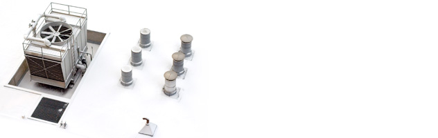
Tours de refroidissement, circuit de refroidissement de l’eau, etc.
Domaines d'application:
- L’eau de refroidissement
- L’eau de refroidissement d’urgence
- L’élimination du biofilm
- Nettoyage et désinfection des systèmes d’eau
- Dosage constant
- La prévention de la légionellose